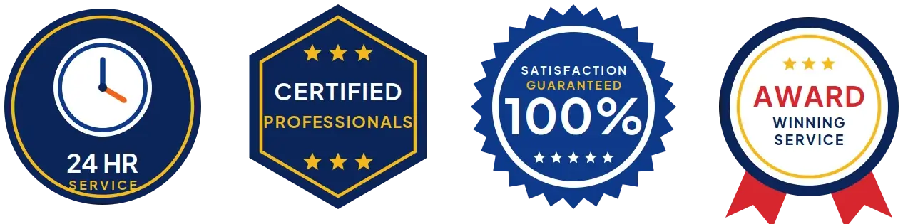
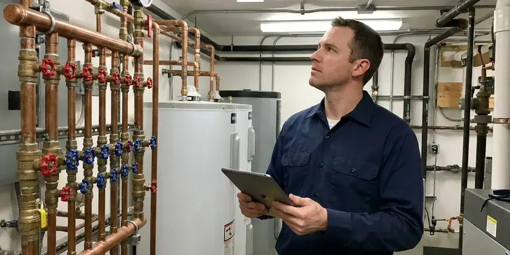
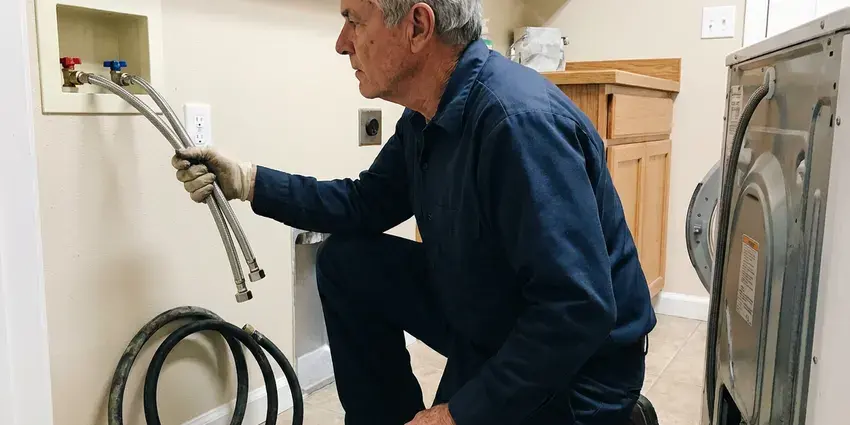
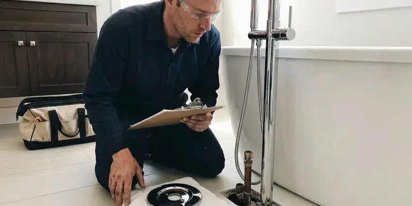
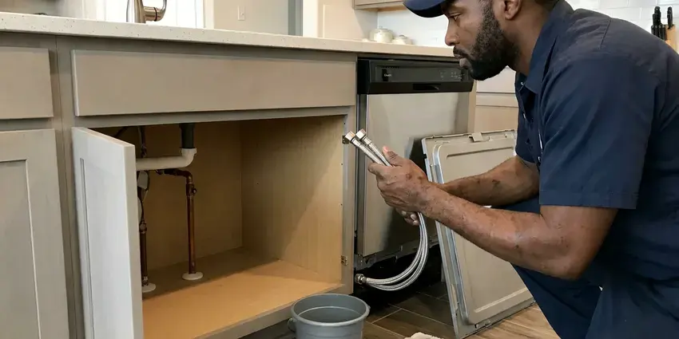
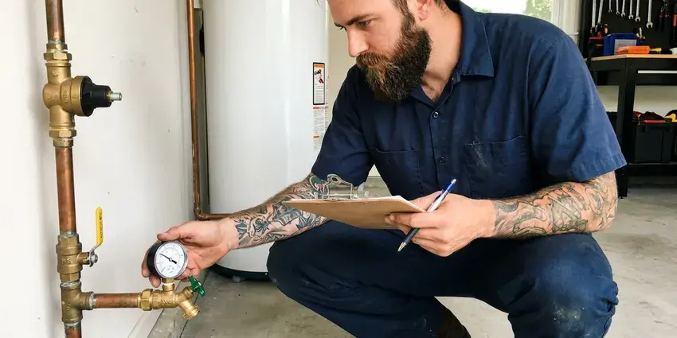

Water Leak Detection in Meadow Lakes, AK
CKN Plumbing provides professional water leak detection for homeowners across Meadow Lakes, AK. We're equipped to find even the most elusive leaks, preventing further problems.
- Meter and Pressure Testing
- Transparent Pricing
- Expert Plumbers
- Smart Leak Sensor Installation

Get Dependable Water Leak Detection in Meadow Lakes, AK.
Contact CKN Plumbing now to schedule your water leak detection service and protect your property.
Professional Water Leak Detection Services in Meadow Lakes, AK
CKN Plumbing performs whole-property water leak detection, starting at the meter and working through the main service line, indoor plumbing, water heater, softener, irrigation and pool. We use meter flow tests and zone isolation to narrow the leak down before using locating equipment.
Our expertise includes:
- Pinpoint hidden slab leaks with accuracy.
- Use acoustic and thermal imaging technology.
- Smart shutoff valves and leak sensors from Moen Flo and Phyn

Additional Plumbing Maintenance Services in Meadow Lakes, AK
Our maintenance and specialty plumbing services in Meadow Lakes, AK catch small problems before they become emergencies.


Water Heater Maintenance near Meadow Lakes



Commercial Plumbing near Meadow Lakes

Customers
Why Choose CKN Plumbing for Water Leak Detection in Meadow Lakes, AK?
We look at the whole system instead of jumping to one suspect. That way you do not pay to fix a toilet when the actual leak is a cracked irrigation line.
- Foundation Protection, Water leaks can erode soil around foundations, leading to expensive structural damage.
- Local Expertise, Our team understands the particular plumbing challenges faced by homes in Meadow Lakes, AK, including foundation types and pipe materials.
- Advanced Tools, We use modern acoustic listening devices, thermal imaging cameras and moisture meters for non-invasive leak detection.
Citywide Coverage
Our team is always on call for water leak detection across Meadow Lakes, so residents receive fast attention. From the city center to the surrounding suburbs, we're your local plumbing experts.
Experienced Team
Our technicians have tracked down leaks in toilets, softeners, irrigation valves and underground service lines. They know the patterns that point to each source.
Safety-First Approach
At CKN Plumbing, safety and code compliance are paramount in all our water leak detection work. We make sure all detection methods are non-invasive and that any subsequent repairs meet Alaska plumbing codes and standards.
Trusted Certified Meadow Lakes Plumbing Services Professionals
At CKN Plumbing, we take pride in providing licensed, certified plumbing services throughout Meadow Lakes, AK. Backed by recognized industry credentials, our experienced plumbers combine technical skill with genuine customer care. Whether it is repair, installation, or maintenance, we follow strict safety and quality standards to deliver long-lasting results you can trust.
Call Us Now Better Business Bureau (BBB) Accreditation
Better Business Bureau (BBB) Accreditation Angi Certified Pro
Angi Certified Pro ISO 9001 Quality Management Certification
ISO 9001 Quality Management CertificationDependable Water Leak Detection Services in Meadow Lakes, AK
Main Service Line Leak Detection in Meadow Lakes, AK
The line from the meter to your house carries full pressure and can leak underground for a long time. Wet soil, soft spots or oddly green patches of yard may be the only clues. We trace the line, listen for the leak and mark it for a targeted repair. Replacing old galvanized or polybutylene service lines is usually recommended.

Irrigation Leak Detection in Meadow Lakes
Drip and sprinkler systems run underground across yards and often account for hidden water loss. Cracked tubing, broken emitters and stuck valves can waste huge amounts of water. We isolate the irrigation system, test each zone and trace leaking lines. Repairs restore efficient watering for your landscape.
Commercial Water Leak Detection in Meadow Lakes, AK
Commercial properties in Meadow Lakes face added challenges with larger, more complex plumbing systems. Leaks can disrupt business operations, lead to costly downtime and damage inventory. CKN Plumbing offers specialized commercial leak detection services, using industrial-grade equipment to locate leaks in large facilities, multi-story buildings and specialized systems. We work efficiently to minimize impact on your business, providing rapid diagnosis and repair solutions.
Water Leak Detection for Insurance Claims in Meadow Lakes
After a water leak, accurate documentation of the leak's source and extent of damage is important for insurance claims. CKN Plumbing provides detailed reports and photographic evidence of our leak detection findings, assisting Meadow Lakes homeowners with their insurance processes. We work to make sure you have all the necessary information to support your claim, making a stressful situation a little simpler. Our transparent reporting helps streamline the recovery process following a water damage event in Alaska.
Leak Detection for PEX and Copper Pipes in Meadow Lakes
Whether your plumbing system uses modern PEX tubing or traditional copper pipes, CKN Plumbing has the expertise to detect leaks in both materials. PEX, while flexible, can be susceptible to damage from rodents or improper installation, while copper can corrode over time, especially with hard water. Our tools are effective across various pipe materials, allowing accurate detection regardless of your home's plumbing type.
Toilet and Fixture Leak Detection in Meadow Lakes, AK
Toilets are one of the most common sources of wasted water. A worn flapper or a fill valve that never shuts off can leak quietly around the clock. We use dye tests to find leaking toilets and check faucets, showers and supply lines for drips. These fixes are typically quick and save water right away.
Pinhole Leak Detection in Meadow Lakes, AK
Pinhole leaks, often found in copper or PEX piping, are small but can cause serious damage over time, especially behind walls or under floors. We use non-invasive moisture meters to detect elevated humidity levels and thermal cameras to identify cold spots that indicate water. Our plumbers are skilled at tracing these elusive leaks without tearing apart your entire home. Swift action on pinhole leaks prevents extensive drywall damage, mold growth and compromised structural integrity. Many homes in Alaska rely on hydronic heat, so a boiler or circulation pump failure can quickly become a freeze emergency as well.

Preventative Leak Inspections in Meadow Lakes, AK
Beyond emergency detection, CKN Plumbing offers preventative leak inspections to identify potential problems before they become major issues. This service is particularly valuable for older homes in Meadow Lakes with aging plumbing systems. We conduct thorough checks of visible and accessible pipes, connections and fixtures, looking for early signs of corrosion or wear. A proactive approach to leak detection can save homeowners significant money and hassle in the long run, extending the life of your plumbing system in Alaska.
Water Leak Detection Near Me in Meadow Lakes, AK
When you search for 'water leak detection near me' in Meadow Lakes, AK, CKN Plumbing is your local answer. Our technicians are located across the area to provide fast, efficient service right to your doorstep. We understand the plumbing challenges faced by properties in our community, from foundation issues to hard water effects.
When your water bill spikes, you want quick answers from a team that is close by. Our technicians serve all of Meadow Lakes and can usually test your system within a day. We arrive ready to find the leak and often repair it on the first visit.
CKN Plumbing at a Glance
- Fully licensed plumbing team covering Meadow Lakes, AK
- Same-day appointments and 24/7 emergency response
- Clear written estimates, no hidden fees
- 4.9-star rated by 309+ Alaska customers
Meadow Lakes Map
Meadow Lakes Information
- Population
- 9,197
- Area codes
- Local
- Service area
- Meadow Lakes and communities within 40 miles
- Nearby
- Tanaina, Wasilla, Knik-Fairview, North Lakes
Water leak detection is vital for homes in Meadow Lakes, AK, because leaks can saturate the soil under a foundation and hidden moisture encourages mold growth inside walls and floors. Many homes in Alaska rely on hydronic heat, so a boiler or circulation pump failure can quickly become a freeze emergency as well.
Expert Services
Trust our professionals for reliable CKN Plumbing solutions in Meadow Lakes, AK.
Our Specialized Plumbing Services in Meadow Lakes, AK
At CKN Plumbing, we provide a complete range of plumbing services across Meadow Lakes, AK. From leak detection to full system installations, our team ensures fast, precise, and affordable service for both residential and commercial properties. Explore our core services below:

Plumbing Repair near Meadow Lakes

Professional bathroom plumbing, Meadow Lakes

Kitchen Plumbing near Meadow Lakes


Plumbing Maintenance in Meadow Lakes
How Our Water Leak Detection Process Works in Meadow Lakes, AK
Our process is simple: confirm, isolate, locate and repair, so you get a clear answer and a lasting fix.
Request a Quote
Start by calling (928) 470-9007 to describe your leak concerns and schedule an appointment. Our team will gather initial information to prepare for your service visit.
On-Site Inspection
A certified technician arrives at your Meadow Lakes property, performs a visual inspection and uses specialized tools like acoustic listening devices or thermal cameras to locate the leak source.
Diagnosis & Plan
Once the leak is pinpointed, we explain the findings, discuss repair options and provide a clear, upfront quote. We make sure you understand the scope of work before proceeding.
Frequently Asked Questions About Water Leak Detection in Meadow Lakes
The cost for water leak detection in Meadow Lakes usually ranges from $200 to $600, depending on the complexity and location of the leak. This fee covers the use of professional equipment and the expertise required to pinpoint hidden leaks. Any subsequent repair costs would be quoted separately after the leak is identified.
Common signs include a sudden, unusual increase in your water bill, the sound of running water when all fixtures are off, visible water stains on walls or ceilings, peeling paint, a musty odor or warm spots on your floor, especially near walls.
While you can perform simple checks like monitoring your water meter, accurately detecting hidden leaks, especially slab or wall leaks, usually requires professional equipment and expertise. DIY attempts often lead to misdiagnosis or needless damage to your property.
We install smart shutoff valves such as Moen Flo and Phyn, along with wireless leak sensors. These monitor flow and can shut off water when a leak is detected. You get alerts on your phone.
We use professional equipment including acoustic listening devices, thermal imaging cameras, moisture meters, video pipe inspection cameras and sometimes tracer gas detection. These tools allow us to locate leaks non-invasively and with high precision.
Irrigation and pool top-offs naturally increase summer use. But a big jump compared to last summer often points to a leak, especially in irrigation. We can test to find out.
For minor water leak repairs that don't involve significant alteration to the plumbing system, a permit is typically not required. However, for extensive pipe replacements, re-piping a section of your home or major slab leak repairs, a plumbing permit from the local building department may be necessary. Our team will advise you on any permit requirements.
If you suspect a slab leak, the first step is to call a professional like CKN Plumbing right away. Avoid trying to dig or open up the slab yourself, as this can cause more damage. Turn off your main water supply if the leak is severe, and clear the area for our technicians.
What People Are Saying About Our Plumbing Experts?

Patricia H.
We had a slab leak that two other companies could not find. CKN Plumbing located it in under an hour, explained our options, and the price matched the quote to the dollar.
Slab Leak Repair · Tanaina, AK
Mark T.
When our office needed drain cleaning, CKN Plumbing provided quick, reliable service. The plumber arrived on time and made sure every drain flowed perfectly before leaving. Very satisfied.
Drain Cleaning · Fishhook, AK
Sofia M.
Two new toilets installed in one visit, no mess left behind, and the tech even adjusted a faucet he noticed was dripping. Fair pricing and really friendly.
Toilet Installation · Tanaina, AK
Robert G.
The trenchless sewer replacement saved our front yard. They walked us through the camera inspection footage first so we knew exactly what we were paying for.
Sewer Line Replacement · Fishhook, AKJames P.
Our commercial plumbing system had a leak under the sink, and CKN Plumbing handled it professionally. The plumbers arrived quickly and restored everything without disruption to our customers.
Commercial Plumbing · Meadow Lakes, AK
Daniel K.
A pipe burst at 11 pm and they actually answered. The plumber showed up within the hour, shut everything down, and had us back to normal the next morning. Could not ask for more.
Emergency Plumbing · Fishhook, AK